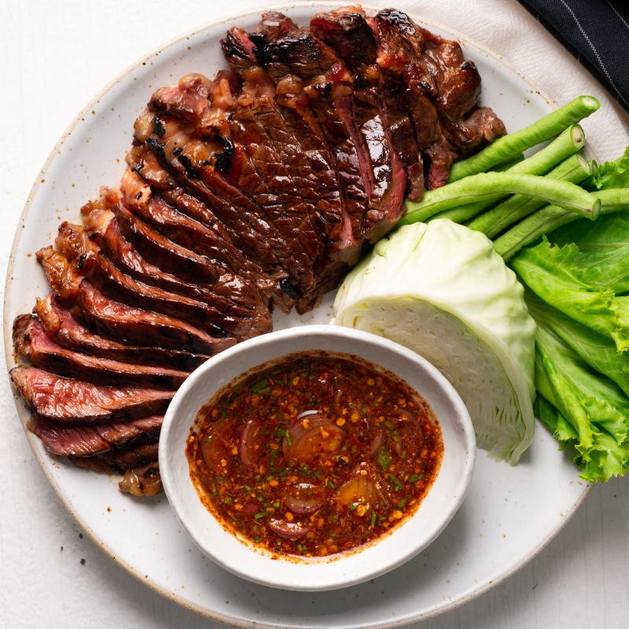

Odin Recipes

A lucious steak recipe accompanied with a tangy, spicy sauce.
Ingredients
- 2 Sirlion steaks
- Soy sauce
- Oyster sauce
- Palm sugar
- Ground black pepper
- Lime juice
- Fish sauce
- Tamarind paste
Method
- Mix together the soy sauce, oyster sauce, oil, palm sugar, and ground black pepper in a bowl until combined. Let the steaks marinate in the sauce while you prepare the nam jim jaew.
- Heat a pan over medium heat. Once hot, add the sticky rice to the pan and toss/stir continuously until the grains have become golden brown in color.
- Transfer the toasted grains to a mortar and pestle and grind the rice until you achieve a coarse powder.
- Add in the lime juice, fish sauce, tamarind paste, palm sugar, chopped cilantro, Thai chili flakes, and shallots. Mix until well combined and adjust accordingly to tastes.
- Heat a heavy bottom pan or iron skillet over medium-high heat. Fry the steaks for 2-3 minutes on each side for a rare to medium-rare steak (you may also cook the steak longer until you reach our desired level of doneness).
- Let the steaks rest for at least 10 minutes before slicing. Serve with the nam jim jaew sauce and fresh vegetables. Enjoy!